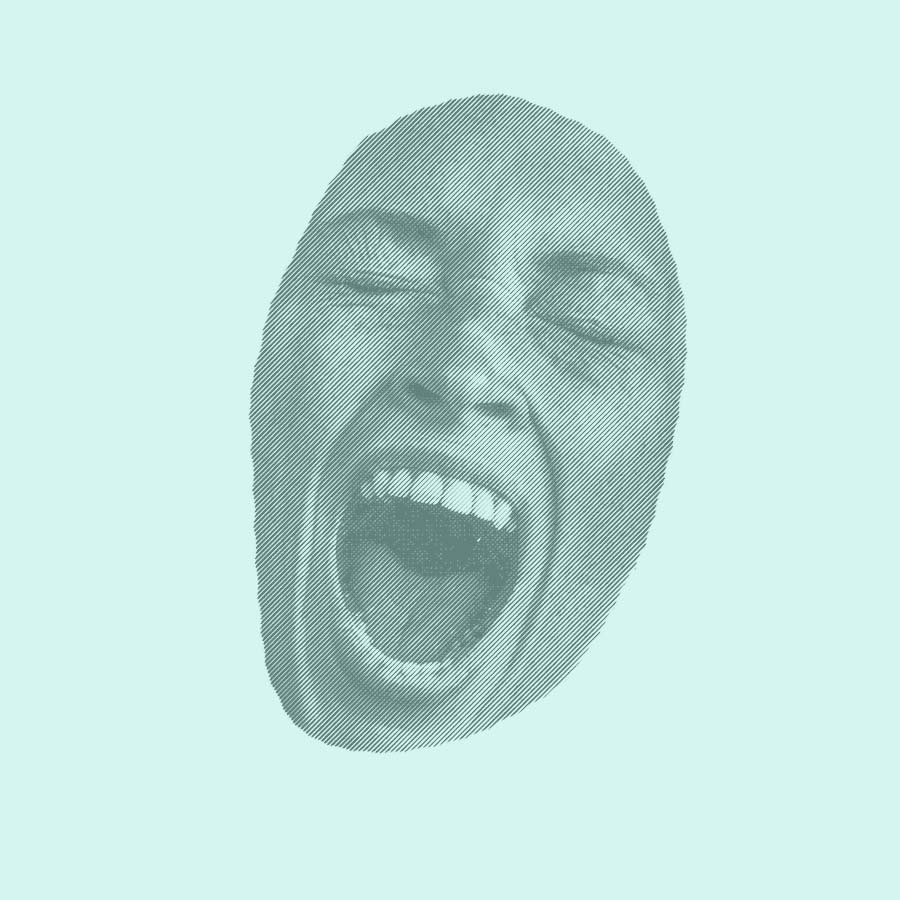
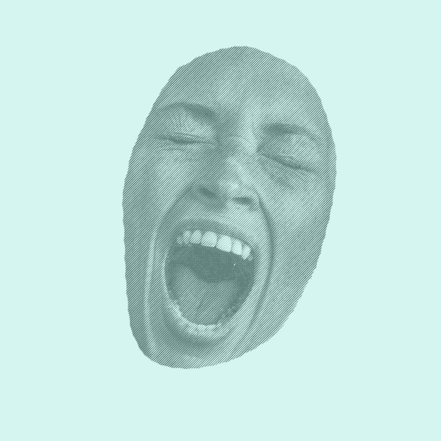
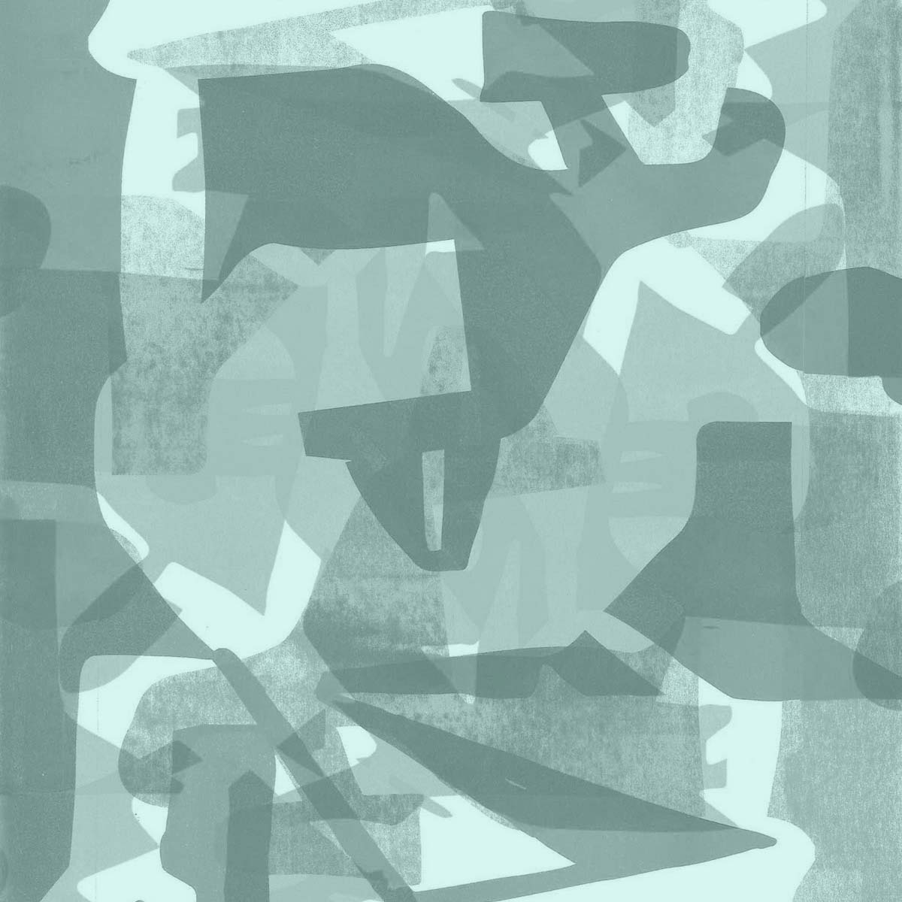
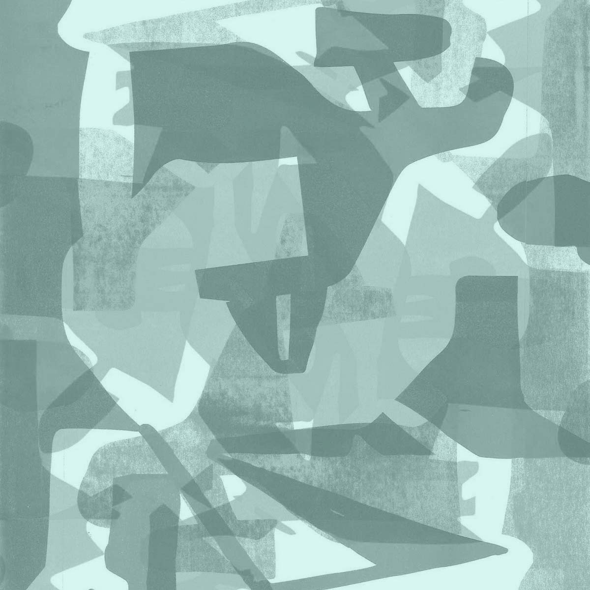

Juliette
Dupré

 

à propos
 

portfolio
site éco-conçu

Juliette Dupré, étudiante en 2e année à l'ésad Amiens.
Vous pouvez me contacter par mail à l'adresse juliettedupre04@gmail.com


22 tirages
148 x 210 mm
papier aquarelle 250 g
Le projet repose sur l'expérimentation du cyanotype comme méthode d'impression photographique.
C'est un procédé ancien qui utilise une solution de ferricyanure de potassium et de citrate d'ammonium ferrique. Le support imbibé réagit comme un négatif.
Les parties non-exposées aux UV resteront blanches après passage dans un bain de rinçage.
10 impressions
risographie
3 A3 recto-verso par spécimen
Le projet propose une version du spécimen de la font Inknut Antiqua créée par Claus Eggers Sorensen en 2014.
Elle est sous la licence SIl Open Font 1.1.
Le spécimen est en bichromie vert et bleu et a été imprimé en risographie.
Il présente la typographie en mêlant les lettres à des dessins inspirés de l'arbre inknut qui donne son nom à la font.
50 tirages
sérigraphie
420 x 594 mm
Création d'affiches durant un workshop de sérigraphie. Le travail a été porté sur la répétition d'un motif de visage et d'un texte peint.

12 photos
100 x 150 mm
numérique
Les nouvelles passions lors du confinement
boîte
édition 200 x 280 mm
6 affiches A3
dépliant 420 x 594 mm
10 polaroids
6 stickers


planches d'études
maquette
5 affiches


5 affiches
420 x 594 mm
Création de 5 affiches de thématiques différentes. Chacune illustre l'association de 3 mots choisis aléatoirement dans un livre.
Ce site a été conçu de manière à minimiser son impact sur l'environnement.
L’éco-conception web vise à réduire l’impact environnemental d’un site internet lors de son cycle de vie, de sa fabrication à son utilisation.
La palette de couleurs est réduite à 3 nuances.
Le site utilise exclusivement des font présentes sur tous les ordinateurs.
L'hébergeur est o2switch. Ses datacenters sont localisés en France.
Il n'y a pas de Java Script (très gourmand en énergie).
Les images sont compressées pour réduire leur poids. Elles se chargent au fur et à mesure que la page est déroulée.
Le site contient une seule et unique page.